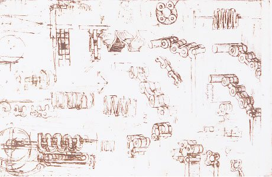
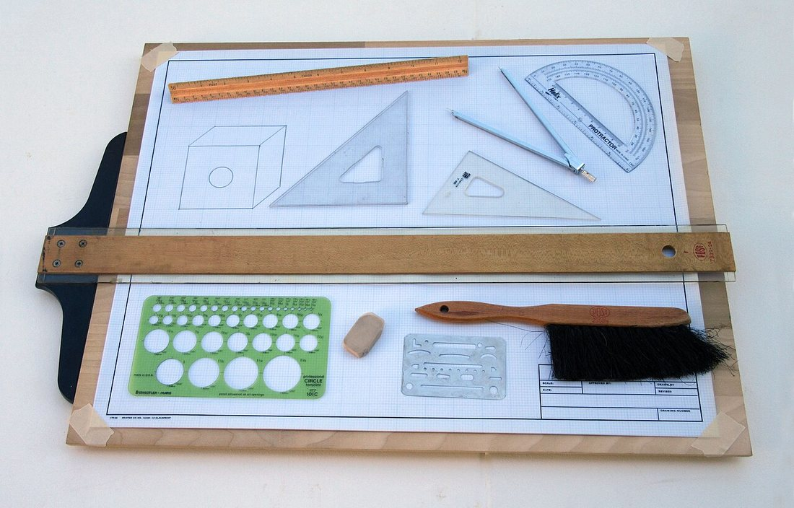
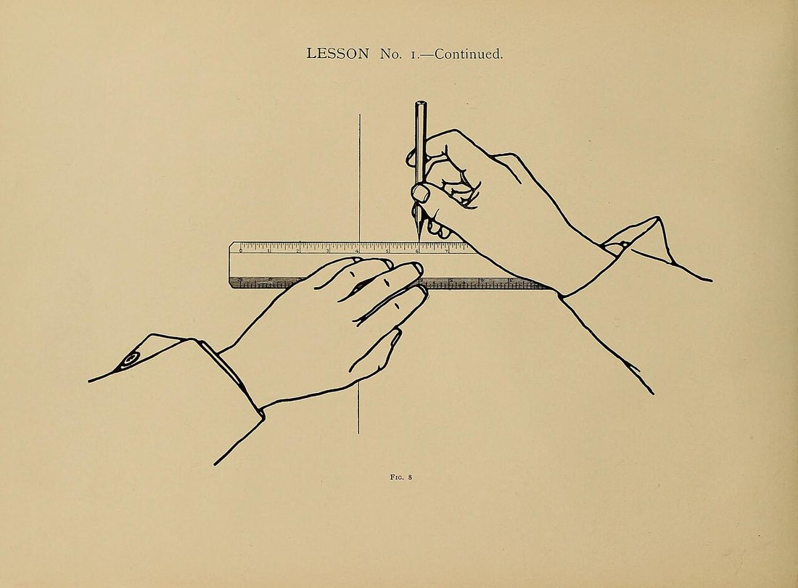
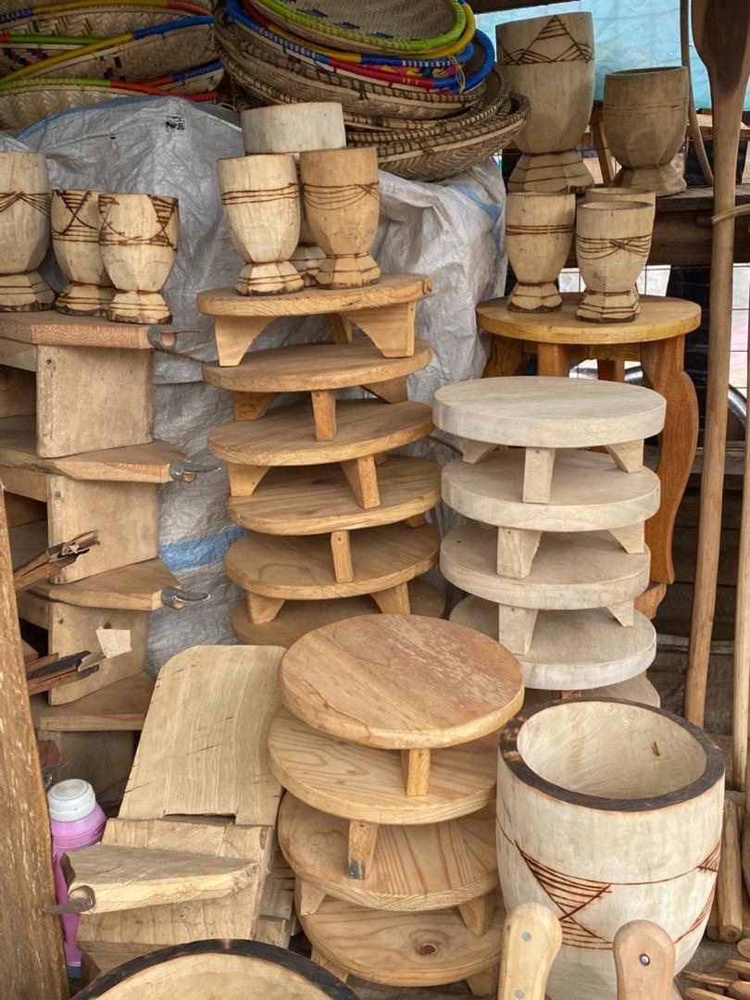
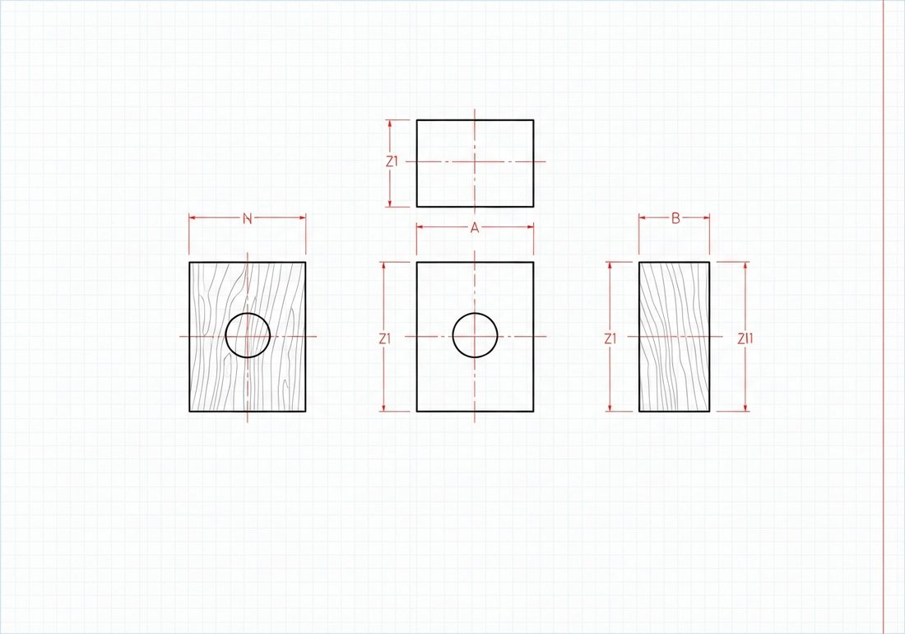

Көркем еңбек (ұлдар) · 1-бөлім · Графика және жобалау Art & Craft (Boys) · Section 1 · Graphics & Design Художественный труд (мальчики) · Раздел 1 · Графика и проектирование
📐 Бұйымды жобалау: идеядан сызбаға дейін
📐 Designing a Product: From Idea to Drawing
📐 Проектирование изделия: от идеи к чертежу
Әр бұйым ойдан басталып, нобай мен дәл сызба арқылы шеберханада өмірге келеді. Every product starts as an idea and comes to life through a sketch and a precise drawing. Каждое изделие начинается с идеи и оживает через эскиз и точный чертёж.
Жобалау (проектирование) — болашақ бұйымды алдын ала ойлап, оның пішінін, өлшемдерін, материалын және жасау тәртібін анықтайтын шығармашылық-техникалық үдеріс. Шебер ағашты кеспес бұрын ойды қағазға түсіреді: алдымен еркін нобай, содан кейін дәл сызба. Дұрыс жоба — артық материал мен қателіктерден сақтайды, уақытты үнемдейді. Designing (engineering design) is the creative-technical process of planning a future product in advance — defining its shape, dimensions, material and order of work. Before cutting any wood, the maker puts the idea on paper: first a free sketch, then a precise drawing. A good design saves material, prevents mistakes and saves time. Проектирование — это творческо-техническая работа, в которой будущее изделие продумывают заранее: определяют его форму, размеры, материал и порядок изготовления. Прежде чем резать древесину, мастер переносит идею на бумагу: сначала свободный эскиз, затем точный чертёж. Хороший проект экономит материал, время и защищает от ошибок.
🧭 Жобалаудың 5 кезеңі 🧭 The 5 Stages of Designing 🧭 5 этапов проектирования
Бұйым не үшін керек? Кімге, қандай функция атқарады — соны анықтаймыз.What is the product for? Who needs it and what function it serves.Зачем нужно изделие? Кому и какую задачу оно решает.
Қолмен еркін сурет: жалпы пішін, нұсқаларды салыстырамыз.A free hand drawing: general shape, comparing variants.Свободный рисунок от руки: общая форма, сравнение вариантов.
Сызғыш, циркуль, масштаб: дәл өлшемдер мен проекциялар.Ruler, compass, scale: exact dimensions and projections.Линейка, циркуль, масштаб: точные размеры и проекции.
Сызба бойынша материалды белгілеп, кесіп, бұйымды жасаймыз.Mark, cut and build the product following the drawing.По чертежу размечаем, режем и собираем изделие.
Дайын бұйымды жобамен салыстырамыз, сапасын тексереміз.Compare the finished item with the plan; check quality.Сравниваем готовое изделие с проектом, проверяем качество.
🖼️ Идеядан бұйымға дейін — суреттермен 🖼️ From Idea to Product — in Pictures 🖼️ От идеи к изделию — в картинках
🔍 Үлкейту үшін кескінді басыңыз. 🔍 Tap an image to enlarge it. 🔍 Нажмите на изображение, чтобы увеличить.




⚖️ Нобай мен сызбаның айырмашылығы ⚖️ Sketch vs Technical Drawing ⚖️ Чем эскиз отличается от чертежа
| Признак | Эскиз | Чертёж |
|---|---|---|
| Как выполняют | От руки, быстро | По линейке, циркулем, точно |
| Масштаб | Примерный, без масштаба | Строгий масштаб (1:1, 1:2, 2:1) |
| Размеры | Главные, ориентировочно | Все размеры с допусками |
| Назначение | Зафиксировать идею | Изготовить изделие |
| Линии | Свободные, набросочные | По стандарту (ГОСТ/ЕСКД) |
| Белгісі | Нобай | Сызба |
|---|---|---|
| Орындау тәсілі | Қолмен, жылдам | Сызғышпен, циркульмен, дәл |
| Масштаб | Шамамен, масштабсыз | Қатаң масштаб (1:1, 1:2, 2:1) |
| Өлшемдер | Негізгілері, болжаммен | Барлық өлшем дәлдікпен |
| Мақсаты | Идеяны бекіту | Бұйымды дайындау |
| Сызықтар | Еркін, нобайлы | Стандарт бойынша (МемСТ/ЕСКД) |
| Feature | Sketch | Technical drawing |
|---|---|---|
| How it is made | By hand, quickly | With ruler & compass, precisely |
| Scale | Approximate, no scale | Strict scale (1:1, 1:2, 2:1) |
| Dimensions | Main ones, roughly | All sizes with tolerances |
| Purpose | To capture the idea | To manufacture the product |
| Lines | Free, sketchy | To standard (GOST/ESKD) |
📊 Үш көрініс — проекциялар 📊 Three Views — Projections 📊 Три вида — проекции

Тіктөртбұрышты бұйымның үш проекциясы (схема) Three projections of a rectangular part (schematic) Три проекции прямоугольной детали (схема)
Көлемді бұйымды жазық қағазда көрсету үшін оны бірнеше жағынан бейнелейді. Әдетте үш негізгі көрініс жеткілікті: To show a 3D product on flat paper, it is drawn from several sides. Usually three main views are enough: Чтобы показать объёмное изделие на плоском листе, его изображают с нескольких сторон. Обычно достаточно трёх основных видов:
Алдынан қарауFront viewВид спереди
Басты көрініс — биіктік пен ені.The main view — height and width.Главный вид — высота и ширина.
Үстінен қарауTop viewВид сверху
Басты көріністің үстіне орналасады — ені мен тереңдігі.Placed above the front view — width and depth.Располагается над главным — ширина и глубина.
Бүйірінен қарауSide viewВид сбоку
Оң жағында — биіктік пен тереңдік.To the right — height and depth.Справа — высота и глубина.
🎯 Жақсы жобаның талаптары 🎯 What a Good Design Needs 🎯 Требования к хорошему проекту
ПайдалылықUsefulnessПольза
Бұйым өз қызметін жақсы атқаруы керек.The product must do its job well.Изделие должно хорошо выполнять свою задачу.
БеріктікStrengthПрочность
Материал мен қосылыстар мықты болуы тиіс.Material and joints must be reliable.Материал и соединения должны быть надёжны.
ӘсемдікBeautyКрасота
Пішін мен пропорция жарасымды болсын.Shape and proportions should be pleasing.Форма и пропорции должны быть гармоничны.
ҮнемділікEconomyЭкономичность
Материал мен уақытты ұтымды жұмсау.Use material and time wisely.Рационально расходовать материал и время.